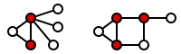
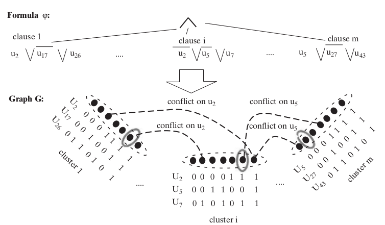
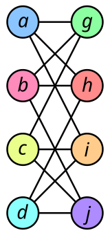
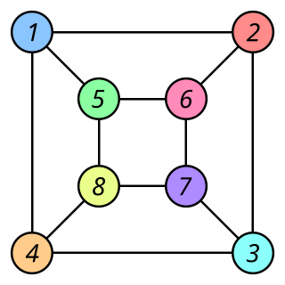
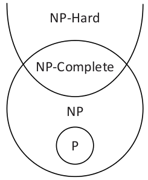

Resumen Unidad 1
- tiempo de corrida de una máquina M con input x
- lenguajes decidibles
- substituciones de máquinas con desaceleración
- existencia de máquinas universales
- lenguajes indecidibles
Años 1960: complejidad computacional
- ¿cuales son las cosas que se pueden calcular de manera eficaz?
- de manera eficaz = con recursos limitados (tiempo, memoria,...)
- ¿Cual es la dificultad intrinseca de un problema?
- ¿Hay problemas computacionalmente más difíciles que otros?
Como los vamos a resolver
- nos importa la relación entre el tamaño de la entrada y los recursos usados para llevar a cabo un cálculo
- queremos abstraernos del lenguaje de programación usado, y de otro detalles (tipo de máquina)
- sin embargo queremos medir o clasificar la complejidad de manera informativa
Tiempo de corrida de una máquina
Una máquina computa f o decide Lf en tiempo T(n) si su corrida en cada entrada x necesita cómo máximo T(∣x∣) pasos.
Análisis asintótico
Para comparar funciones, consideramos solamente el término más grande de una expresión, ignorando el coeficiente de ese, y los términos más chiquitos.
La razón es que con entradas de tamaño grande, sólo el termino más grande termina importando.
Ejemplo: f(n) = 6n2 + 2n2 + 20n + 45
El término de orden más grande es 6n2, y si nos abstraemos del coeficiente 6 podemos decir que f vale asipmtoticamente como máximo n3.
Escribimos f(n) = O(n3).
Notación O grande
Dadas las funciones f, g: N ↦ N. Escribimos f(n) = O(g(n)) si existen una constante c > 0 y un rango n0 ∈ N tales que para toda n > n0, f(n) ≤ c. g(n).
f(n) = O(g(n)) significa que f es menor o igual a g si no consideramos las diferencias hasta un factor constante.
Notación o chiquita
Dadas las funciones f, g: N ↦ N. Escribimos f(n) = o(g(n)) si:
limn → + ∞(f(n) / g(n)) = 0
es decir, para cualquier
c > 0, existe
n0 tal que para toda
n > n0,
f(n) < c. g(n) .
Ejemplos o chiquita
- n1 / 2 = o(n)
- n = o(nlog(logn))
- nlog(log(n)) = o(nlogn)
- nlogn = o(n2)
- n2 = o(n3)
- nunca ocurre que f(n) = o(f(n))
O vs o
La O grande dice que una función no es más grande asimptóticamente que otra ( ≤ ).
La o chiquita dice que una función es menor asimptóticamente que otra ( < ).
Linear speed-up theorem (Hartmanis y Stearns, 1965)
Si f es computable por una máquina M en tiempo T(n), entonces para cualquiera constante c ≥ 1, f es computable por una máquina Mʹ en tiempo T(n) / c.
Idea: Mʹ tiene un alfabeto y conjunto de estados más grande que M.
Clases de complejidad TIME
Sea T: N ↦ N. Un lenguaje L es en TIME(T(n)) si existe una máquina que corre en tiempo c⋅T(n) (para un c > 0) y decide L.
SPACE
Sea s: N ↦ N y L ⊆ {0, 1} * .
Decimos que L ∈ SPACE(s(n)) si existe una máquina M y una constante c tal que M decide L y además, para todo input de longitud n, M visita cómo máximo c. s(n) casillas en sus cintas (excluyendo la cinta de input) durante la computación.
Observación: como M decide L, M se detiene después de un número finito de pasos.
TIME y SPACE
En cada paso, una máquina puede descubrir cómo máximo un número constante de casillas nuevas, entonces para cualquier f:
TIME(f(n)) ⊆ SPACE(f(n))
Configuraciones
Una configuración de una máquina es el contenido de todas las casillas no blancas de sus cintas, las posiciones de sus cabezales y su estado activo.
Si una máquina corre en espacio O(s(n)), entonces necesitamos O(s(n)) casillas para representar una de sus configuraciones.
Grafo de configuraciones
Sea M una máquina, x ∈ {0, 1} * .
El grafo de configuraciones de M, llamado GM, x, es un grafo dirigido cuyos nodos corresponden a todas las configuraciones de M cuando el input es x.
GM, x tiene un eje de la configuración C a la configuración Cʹ si Cʹ es alcanzable a partir de C en un paso según la función de transición de M.
Sea M una máquina corriendo en espacio s(n). El número de configuraciones CM(n) de M con input n es acotado por:
CM(n) ≤ ∣QM∣ ⋅ n ⋅ s(n) ⋅ ∣Σ M∣s(n)
con ∣QM∣ los estados de M, ∣Σ M∣ su alfabeto.
En particular si
s(n) ≥ log(n) tenemos
CM(n) = 2O(s(n)).
Consecuencia: una máquina decidiendo un lenguaje en espacio s(n) no corre en más que 20(s(n)), sino entraría en un bucle infinito.
Esto nos da:
TIME(s(n)) ⊆ SPACE(s(n)) ⊆ TIME(2O(s(n)))
Clases en tiempo y en espacio
P = ⋃ c ≥ 1 TIME(nc)
EXPTIME = ⋃ c ≥ 0TIME(2nc).
PSPACE = ⋃ c > 0 SPACE(nc)
L = SPACE(log(n))
Inclusiones según el resultado anterior: dibujar díagramo de Venn.
P como clase de problemas fáciles
La clase P es robusta si cambiamos el tipo de máquina que usamos (ver resultados Unidad 1).
Doblar el tamaño del input sólo necesita k veces más tiempo (con k constante):
- inputs de longitud n necesitan tiempo nc
- inputs de longitud 2n necesitan (2n)c = (2c)nc
Con P (y arriba), no importa (tanto) el modelo
Cuando vamos a describir algoritmos para P, no vamos a describir máquinas hasta los últimos detalles.
Cuando tenemos un algoritmo en pseudocódigo cuya complejidad podemos caracterizar, podemos decir que tenemos una máquina que implementa ese mismo algoritmo, con una deceleración polinomial.
Codificación
- Tenemos que medir el tamaño de los datos manejados por las máquinas (y/o nuestros algorítmos) en bits.
- Tiene un impacto como representamos los símbolos, números, grafos, conjuntos, mátrices, etc.
- En particular, escribir un número en base binaria es exponencialmente más sucinto que en base unaria. Puede ser que un algorítmo para Lunario corra en tiempo polinomial pero su equivalente para Lbinario en tiempo exponencial!
- Buena noticia, operaciones usuales (eg + , − , . , / ) se pueden hacer en tiempo polinomial con representación binaria
Críticas de "P = problemas fáciles"
- es demasiado permisiva
- es demasiado estricta
Lenguajes en P
(Arora and Barak, 1.8)
- PATH = {⌊(G, s, t)⌋ ∣ G un grafo dirigido con camino s → t}
- algoritmo brute-force (mm caminos posibles) → PATH ∈ 2EXPTIME
algoritmo goal-oriented → PATH ∈ P (Sipser, thm. 7.14)
- RELPRIME = {⌊(x, y)⌋ ∣ x, y ∈ N relativamente primos }
- enumerar todos los dividores de x y y, si otro que 1 aparece en ambas listas, output 0, sino 1
→ RELPRIME ∈ EXPTIME si ⌊(x, y)⌋ en binario!
- algoritmo de Euclides: ∈ P (Sipser, thm. 7.15)
Algoritmo de Euclides:
E: input: x,y
hasta que y == 0:
a) x ← x mod y
b) intercambiar x y
output x
R: input: x,y
si E(x,y) == 1 output accept
si no, output reject
- 2COLOR = {⌊G⌋ ∣ G es coloreable por 2 colores }
- 3COLOR = {⌊G⌋ ∣ G es coloreable por 3 colores }
- ∈ P? no se sabe
- ∈ EXPTIME por cierto
- ∈ TIME(O(1. 3289n)) (Beigel y Eppstein, 2000)
- VERTEXCOVER =
{⌊(G, k)⌋ ∣ se puede "cubrir" el grafo G con k nodos }
- ∈ EXPTIME
- ∈ P? no se sabe

LIN(0,1) = sistemas de inecuaciónes lineales con solución booleanas
(0-1 integer programming)
- sea E = :
- x1 + 2x2 + x3 + x4 ≥ 3
x1 + x4 ≥ 0
2x1 + x2 − x3 ≤ 1
- solución: (1, 1, 0, 0)
- E ∈ LIN(0,1)
LIN(0,1) ∈ EXPTIME (enumerar soluciones y verificar).
no se sabe si ∈ P
- formulas de lógica proposicional:
φ : : xi ∣ ¬ φ ∣ φ1 ∧ φ2 ∣ φ1 ∨ φ2
- sea x1, …, xn la variables que aparecen en φ,
escribimos φ(z) el valor de φ cuando sus variables son asignadas a z ∈ {0, 1}n
- si existe tal z, φ es satisfacible
- SAT = {⌊φ⌋ ∣ φ satisfacible }
- ∈ EXPTIME, no se sabe si ∈ P > si ⌊x⌋ ∈ SAT, 3COLOR, ..., x es un problema que tiene una solución, > que es pequeña y verificable rapidamente
No es el caso de todos los lenguajes en EXPTIME.
Clases de complejidad: inclusiones estrictas
Capitulo 9 de Sipser.
Vamos a ver resultados que implican inclusiones estrictas entre clases de complejidad:
- time hierarchy theorem
- space hierarchy theorem
Implican que con más recursos, se pueden resolver más problemas.
Definición preliminaria
f: N ↦ N es constructible en espacio si la función que mapea la string 1n a la representación binaria de f(n) es computable en espacio O(f(n)).
f: N ↦ N es constructible en tiempo si f(n) = O(n. logn) y si la función que mapea la string 1n a la representación binaria de f(n) es computable en tiempo O(f(n)).
Problemas arbitrariamente difíciles
Para toda función T: N ↦ N constructible en tiempo, existe un lenguaje LT decidible que no puede ser decidido por una máquina corriendo en tiempo T(n).
Demostración
LT = {⌊M⌋ ∣ M es una MT y M(⌊M⌋) = 1 en T(∣⌊M⌋∣) pasos }
- LT es decidible (usar MT universal)
- LT no se puede decidir en menos de T(n) pasos
- supongamos ∃ N que decide LT en ≤ T(n) pasos.
- entonces ∃ N' (definida gracias a N) tal que:
- si input ∈ LT, corre siempre
- si input $\notin L_T$, se detiene y imprime 1 (en ≤ T(n) pasos)
- ¿Qué pasa con Nʹ(⌊Nʹ⌋)?
Time Hierarchy Theorem (Hartmanis y Stearns, 1965)
Generalización del resultado previo:
Si f,g son funciones constructibles en tiempo tales que f(n). log(f(n)) = o(g(n)), entonces
TIME(f(n)) ⊂ ≠ TIME(g(n))
En particular: TIME(nc) ⊂ ≠ TIME(nd) con c < d.
Aplicación
Consecuencia del time hierarchy theorem:
P ⊂ EXPTIME
P vs EXPTIME
- P = ⋃ c ≥ 1 TIME(nc)
- EXPTIME = ⋃ c ≥ 1TIME(2nc).
- time hierarchy theorem → P ⊂ EXPTIME
Space Hierarchy Theorem
Para f constructible en tiempo, existe un lenguaje L decidible en espacio O(f(n)) pero no en espacio o(f(n))
Corolario:
Para f, g constructibles en tiempo con f(n) = o(g(n)):
SPACE(f(n)) ⊂ ≠ SPACE(g(n))
Reducciones
Sipser capítulo 7.
Reducción de un lenguaje a otros.
- sin acotar en recurso la reducción: provee resultados de decidibilidad
- acotando la reducción en tiempo polinomial
- acotando la reducción en espacio log
Para que una reducción sea interesante en términos de complejidad computacional, tiene que ser barata con respeto al lenguaje de destino.
Vamos a usar las reducciones Karp en tiempo polinomial.
Reducciones
Sea A, B ⊆ {0, 1} * . A es reducible en tiempo polinomial a B, denotado A ≤ pB, si existe una función f: {0, 1} * ↦ {0, 1} * computable en tiempo polinomial tal que para todo x ∈ {0, 1} * , x ∈ A ssi f(x) ∈ B.
Proposiciones:
- si A ≤ pB y B ∈ P entonces A ∈ P
- ≤ p es transitiva
Ejercicio
- Mostrar que 3COLOR ≤ p SAT:
- Proveer una traducción G → φG
- Demostrar que: G tiene un coloreo → φG tiene una asignación
- Demostrar que: φG tiene una asignación → G tiene un coloreo
Hardness y Completeness
Esas nociones indican cuando un problema representa la dificultad de la clase a cual pertenece.
NP
Un lenguaje L ⊆ {0, 1} * está en NP ssi existe un polinomio p: N ↦ N y una MT M corriendo en tiempo polinomial tal que para todo x ∈ {0, 1} * :
x ∈ L ↔ ∃ u ∈ {0, 1}p(∣x∣) tal que
M(x, u) = 1
- M se llama la verificadora de L, y u un certificado de x (con respeto a L y M).
- La definición de NP es asimétrica!
Lenguajes en NP
existencia de certificados cortos = pertenencia a NP:
- SAT, LIN(0,1), 3COLOR
- traveling salesman
- subset sum
- graph isomorphism
- numeros compuestos
- ...
P ⊆ NP ⊆ EXPTIME
- No se sabe si P ≠ NP, ni si NP ≠ EXPTIME.
P y NP
- en P están los problemas fáciles
- en NP están los problemas que tienen soluciones facilmente chequeables
- NP representa los problemas de búsqueda con soluciones cortas
máquinas nondeterministas
- Una MTND tiene δ0 and δ1 y un estado especial qaccept.
- En cada paso, una MTND hace una elección arbitraria entre las dos funciones de transición.
- Para un input x, si existe una secuencia de esos pasos (elecciones nondeterminísticas) que hace que M alcanza qaccept, decimos que M(x) = 1.
- Si toda secuencia de elecciones hace que M se detiene sin alcanzar qaccept, decimos que M(x) = 0.
- M corre en tiempo T(n) si para todo input x ∈ {0, 1} * y toda secuencia de elecciones nondeterminísticas, M alcanza qhalt o qaccept dentro de T(∣x∣) pasos.
Observación
Una MTND no representa cálculos fisicamente realisables.
Definición tradicional de NP
Sea T: N ↦ N y L ⊆ {0, 1} * . Decimos que L ∈ NTIME(T(n)) si existe una constante c > 0 y una TMND M en tiempo c⋅T(n) tal que para todo x ∈ {0, 1} * :
x ∈ L ↔ M(x) = 1
NPold = ⋃ c ∈ NNTIME(nc)
Equivalencia
Las dos definiciones son equivalentes.
- L ∈ NPold → L ∈ NP
- si existe una MTND M que decide L, se puede construir una MTD Mʹ que, con input (x, u) y u de longitud adecuada, simula una computación de M con input x eligiendo δu[n] en cada paso n.
- L ∈ NP → L ∈ NPold
- se puede construir una MTND que, con input x, genera un certificado en p(∣x∣) pasos de manera nondeterministica, y luego lo averigua con la verificadora de L.
NP hardness, completeness
Decimos que B es NP difícil (hard) si para todo A ∈ NP, A ≤ pB. Decimos que B es NP completo (complete) si B es NP difícil y está en NP.
Proposiciones:
- si L es NP difícil y L ∈ P, entonces P = NP
- si L es NP completo, entonces L ∈ P ssi P = NP.
Un lenguaje NP completo
TMSAT = {⌊M, x, 1n, 1t⌋ ∣ ∃ u ∈ {0, 1}n. M(x, u) = 1 en t pasos}
- TMSAT ∈ NP: la verificadora de N es una máquina universal de Turing que simula M con input (x,u) y verifica que su output es 1 despues de t pasos. Su corrida es polinomial en función de su input porque se puede simular máquinas con una desaceleración polinomial.
- Sea L ∈ NP. Existe verificadora M corriendo en tiempo polinomial q(n), y existe un polinomio p(n) que determine el tamaño de los certificados. Entonces a toda x ∈ L le asociamos la string ⌊M, x, 1p(n), 1q(n + p(n))⌋ con n = |x|
CNF-SAT
- un literal es una variable o una variable negada (xi, ¬ xi)
- una cláusula es una disyuncción de literales tal que no aparece un literal y su contrario
- ej: x1 ∨ ¬ x2 ∨ ¬ x3
- una formula proposicional es en Forma Normal Conjunctiva si es una conjuncción de cláusulas
- ej: (x1 ∨ x3) ∧ (x1 ∨ ¬ x2 ∨ ¬ x3 ∨ x4) ∧ (¬ x1 ∨ ¬ x4)
- definimos CNF-SAT = {⌊φ⌋ ∣ φ es en FNC y es satisfacible }
SAT ≤ p CNF-SAT
- Idea: introducir variables nuevas para evitar explosión exponencial
3SAT
- una formula es en 3FNC si es en FNC y cada cláusula tiene como máximo 3 literales
- ej: (x1 ∨ x3) ∧ (¬ x2 ∨ ¬ x3 ∨ x4) ∧ (¬ x1 ∨ ¬ x4)
- 3SAT = {⌊φ⌋ ∣ φ es en 3FNC y es satisfacible }
CNF-SAT ≤ p 3SAT
- Idea: introducir variables nuevas para evitar explosión exponencial
Teorema de Cook-Levin
- Cook "The Complexity of Theorem Proving Procedures", 1971
- Levin "Универсальные задачи перебора", 1973
SAT es NP-complete
Poder expresivo booleano
- Igualdad: la formula
(x1 ∨ ¬ y1) ∧ (¬ x1 ∨ y1) ∧ … ∧ (xn ∨ ¬ yn) ∧ (¬ xn ∨ yn)
es satisfacible por una asignación z ssi xi(z) = yi(z) para todo i.
- Funciónes booleanas: dada f: {0, 1}k ↦ {0, 1}:
- para v ∈ {0, 1}k, definimos Cv(xi, . . , xk) una cláusula tal que Cv(v) = 0 y Cv(u) = 1 para u ≠ v
- definimos φ = ⋀ {v ∣ f(v) = 0}Cv(x1, x2, …, xk)
- entonces:
- ∀ z ∈ {0, 1}k, φ(z) = f(z)
- ∣φ∣ ≤ k2k
Sea L ∈ NP, queremos mostrar que L ≤ pSAT.
Por definición, ∃ M corriendo en tiempo polinomial y p polinomio tal que para todo x ∈ {0, 1} * :
x ∈ L ↔ ∃ u ∈ {0, 1}p(∣x∣). M(x, u) = 1
Queremos una transformación en tiempo polinomial x ↦ φx tq:
∃ u ∈ {0, 1}p(∣x∣). M(x, u) = 1 ↔ φx ∈ SAT
Reemplazamos la verificadora M por una version que:
- tiene 2 cintas (con input en lectura sola)
- es indiferente:
- las corridas de M toman el mismo tiempo para todo input de tamaño n
- la ubicación de los cabezales de M en un paso i sólo dependen del tamaño del input y de i
Un instantáneo de M es un tuple (a, b, q) ∈ Γ 2 × Q.
Un instantáneo puede ser representado con c bits, c dependiendo de Γ y Q (y independiente del input).
Una traza es una succesión de instantáneos.
- ¿Cuales son las condiciones que debe cumplir una traza para representar una corrida exitosa de M con input (x, u)?
- Vamos a construir φx como un patrón de traza que es satisfacible si y sólo si existe un u tal que M(x, u) = 1
A partir de la función de transición de M definimos:
- δwrite: Γ 2 × Q ↦ Γ
- δstate: Γ 2 × Q ↦ Q
Como M es indiferente, se pueden definir las funciones N ↦ N:
- inpos(i) la posición del cabezal de input en el paso i.
- prev(i) el último paso antes de i tal que el cabezal de escritura está en el mismo lugar que en el paso i. Definimos prev(i) = 1 por defecto.
Los valores de inpos(i) and prev(i) no dependen del input y = (x, u). Además esos valores pueden ser calculados en tiempo polinomial, corriendo M con un input trivial.
Restricciones que debe cumplir una traza [z1, z2, . . . , zT(n)] para representar una corrida exitosa de M con input y:
- z1 = ( ⊳ , ⊳ , qstart)
- zT(n) = (a, 1, qhalt), a ∈ Γ
- para todo zi = (ai, bi, qi) con i ∈ {2, …, T(n)}:
- ai = yinpos(i)
- bi = δwrite(zprev(i))
- qi = δstate(zi − 1)
- para cada i ∈ {2, …, T(n)}, existe une función f tal que esas restricciones son cumplidas ssi f(yinpos(i), zprev(i), zi − 1, zi) = 1
Queremos: φx ∈ SAT ↔ ∃ u ∈ {0, 1}p(∣x∣). y = (x, u). M(y) = 1
Variables de φx:
- Yi con i ∈ [1. . n + p(n)]
- Zi con i ∈ [1. . cT(n)]
Codificación de las restricciónes:
- y[1. . n] = x → formula de tamaño 2n
- z1 → formula de tamaño 2c
- zT(n) → formula de tamaño ≤ 2c
- para cada i ∈ [2. . T(n)],
f(yinpos(i), zprev(i), zi − 1, zi) = 1
→ formula φi de tamaño (3c + 1)23c + 1 tal que
φi(Yʹ, Zʹ1, Zʹ2, Zʹ3) = 1 ↔ f(. . . ) = 1
, con:
- Yʹ son las variables que codifican yinpos(i)
- Zʹ1 son las variables que codifican zprev(i)
- Zʹ2 → zi − 1
- Zʹ3 → zi
- para cada i, para conocer Yʹ, Zʹ1, Zʹ2, Zʹ3, hay que conocer inpos(i) y prev(i), y para eso hay que correr y observar M(0n + p(n))
Tamaño de φx:
2n + 2c + 2c + (T(n) − 1)(3c + 1)23c + 1 ≤ d(n + T(n)), d ∈ N
- se puede construir x ↦ φx en tiempo polinomial:
- correr M(0n + p(n))
- generar φx
- φx es en FNC
- supongamos x ∈ L
→ ∃ u ∈ {0, 1}n. M(x, u) = 1
→ existe una traza que reprensenta la corrida exitosa de M(x, u)
→ usando u y la traza, se puede construir una asignacion z tal que φx(z) = 1
→ φx ∈ CNF-SAT
- supongamos φx ∈ CNF-SAT
→ existe z, φx(z) = 1
→ constuir u a partir de z
→ x ∈ L
- L ≤ p CNF-SAT
- Entonces CNF-SAT es NP-difícil
- Entonces es NP-completo
Teorema de Cook-Levin
Dados L ∈ NP y una string x, construimos φx tal que x ∈ L ssi φx ∈ CNF-SAT.
Idea: Sea M una verificadora de L indiferente y con 2 cintas.
φx es un "patrón de trazas" de las corridas exitosas de M con input x y u (u certificado de x).
- supongamos x ∈ L
→ ∃ u ∈ {0, 1}n. M(x, u) = 1
→ existe una traza que representa la corrida exitosa de M(x, u)
→ usando u y la traza, se puede construir una asignacion z tal que φx(z) = 1
→ φx ∈ CNF-SAT
- supongamos φx ∈ CNF-SAT
→ existe z, φx(z) = 1
→ constuir u a partir de z
→ x ∈ L
- L ≤ p CNF-SAT, para cualquier L ∈ NP
- Entonces CNF-SAT es NP-difícil
- Entonces CNF-SAT es NP-completo
3SAT
- una formula es en 3FNC si es en FNC y cada cláusula tiene como máximo 3 literales
- 3SAT = {⌊φ⌋ ∣ φ es en 3FNC y es satisfacible }
CNF-SAT ≤ p 3SAT
Idea: usar regla de la resolución al revés.
Uso de la NP completitud de 3SAT
- Se sospecha que P ≠ NP, o por lo menos que estar NP difícil es una garantia de dificultad aceptada hoy en día
- Teniendo un lenguaje, es más fácil mostrar una reducción desde 3SAT que desde cualquier lenguaje NP
- La forma de formulas en FNC-3 es conveniente.
INDSET es NP completo
INDSET = {⌊(G, k)⌋ ∣ ∃ S ⊆ N(G), ∣S∣ ≥ k, ∀ uv ∈ S, uv ∉ E(G)}
INDSET ∈ NP porque el certificado es el conjunto S.
Mostramos 3SAT ≤ p INDSET.
Sea φ = ⋀ Ci una formula en FNC3. Sea m el número de cláusulas de φ, construimos un grafo G tal que ⌊φ⌋ ∈ 3SAT ↔ ⌊(G, m)⌋ ∈ INDSET.
Cada cláusula C de φ tiene ≤ 3 literales, entonces hay ≤ 7 asignaciones que la satisfacen.
Construimos para C un cluster de 7 nodos, marquamos cada uno con las asignaciones que satisfacen su cluster.
Conectamos dos puntos si pertenecen a clusters distintos y representan asignaciones inconsistentes (ie, 1 variables es asignada a 1 en un nodo y 0 en el otro).
Conectamos entre si todos los puntos de un mismo cluster.

- La transformación se puede hacer en tiempo polinomial.
- φ satisfacible
→ existe asignación z tal que φ(z) = 1
→ definir S los nodos de cada cluster que corresponden a la restriccion de z a las variables del cluster
→ hay m nodos no conectados entre si en G
- hay m nodos no conectados entre si en G
→ pertenecen a clusters distintos
→ las asignaciones parciales que esos nodos representan son consistentes
→ con ellas construimos z tal que φ(z) = 1
→ φ satisfacible
VERTEXCOVER es NP completo
Reducción descrita en Sipser, teorema 7.44.
Búsqueda vs decisión
Supongamos P = NP. Para todo lenguaje L ∈ NP y una verificadora M para L, existe una MT B corriendo en tiempo polinomial que construye un certificado para todo input x ∈ L.
Demostración:
- en el caso de SAT: si NP=P, construir una asignación para φ se hace en tiempo polinomial:
- probar si φ ∈ SAT, seguir si es el caso
- probar si φ(x1←0) ∈ SAT, en ese caso fijar el primer bit de z a 0 y reemplazar x1 por 0 en φ, en el caso contrario hacer lo mismo con 1
- seguir hasta tener una asignación completa para φ
- en el caso general, con L ∈ NP, usar el hecho que la reducción que vimos es una reducción Levin, ie, se puede construir un certificado para x ∈ L a partir del certificado de φx en tiempo polinomial.
P vs NP y NP completitud
- 1956: Kurt Gödel escribe una carta a John von Neumann planteándole la posibilidad de decidir en tiempo polinomial si una formula de primer order tiene una prueba de longitud n
- 1971: Cook "The Complexity of Theorem Proving Procedures"
- 1972: Karp "Reducibility Among Combinatorial Problems"
- 1972: Miller and Thatcher, editors. "Complexity of computer computations". Plenum Press: proceedings de la conferencia donde se presentó el artículo de Karp frente a 200 investigadores en computación (según el deseo de Michael Rabin)
- 1971/3: Levin "Универсальные задачи перебора" (Universal search problems)
Como manejar problemas NP-completos
- Heuristicas: NP es acerca de todos los inputs posibles, mientras que en casos concretos los inputs pueden tener rasgos explotables (simplicidad, simetrías, variables interconectadas, etc.)
- Fijar parametros (parametrized complexity)
- Canjear exactitud por velocidad
EXP vs NEXP
NEXP = ⋃ c ≥ 0NTIME(2nc).
Ejercicio: encontrar la definición equivalente con certificados.
Teorema:
EXP ≠ NEXP implica P ≠ NP
Supongamos P=NP. Sea L ∈ NTIME(2nc), y M una MT para L.
Sea Lpad = {x012∣x∣c ∣ x ∈ L}. Mostramos que Lpad ∈ NP:
- existe una MTND para Lpad: dado y, chequea si es de la forma $y = z 01^{2^{|z|}^c$. Si no, output 0.
- Correr M con input z por 2∣z∣c pasos.
- El tiempo de corrida es polinomial en función de ∣y∣.
Entonces si P=NP, Lpad ∈ P y existe Mʹ deterministica que decide Lpad.
Entonces L ∈ EXP: para decidir si x ∈ L, lo padeamos con 012∣x∣c y vemos si esto pertenece a Lpad usando Mʹ.
El problema de la factorización
Existen problemas naturales que se sospecha estar en NP \ P sin ser NP completos.
Factorización:
Dado n, m ∈ N tal que 1 ≤ m ≤ n, ¿ n tiene un factor d tal que 1 < d < m?
Se sospecha que FACTOR no está en P, ni es NP completo ni coNP completo.
Observación: el problema ¿ n ∈ N es un número compuesto? es una versión relajada de FACTOR y está en P (equivalentemente, PRIMES está en P).
Otros problemas en NP, sospechados de estar en NP \ (P ∪ NPC)
- isomorfirmo de grafos


- problema de la autopista con peaje (turnpike problem): dadas n(n − 1) / 2 distancias entre pares de puntos, ¿les corresponde alguna configuración de n puntos en una línea?
Teorema de Ladner
Si P≠NP, existe un lenguaje en NP \ P que no es NP completo.
Idea: definir un problema tal que para ciertos inputs de tamaño n, el problema es resolver SAT (para que no este en P), y en otros inputs no hacer nada (para que no sea NP completo).
Prueba detallada adaptada de Arora y Barak
Jerarquia polinomial
Ver diapositivas de Nabil Mustafa.
Si P=NP, todo es la misma clase.
Conclusiones
No tenemos ninguna demostración que P ≠ NP (≠ EXPTIME) pero hoy en día se supone que NP es más dificil que P (y más fácil que EXPTIME).

Lectura
- Arora y Barak: Capítulo 1.6 hasta el final (P).
- Sipser: Capítulo 7 (P, NP)
- Arora y Barak 3.1, Sipser 9 (space/time hierarchy theorem)
- Aaronson: prueba del teorema de Cook-Levin sin usar MT indiferente (sección 5)
Referencias